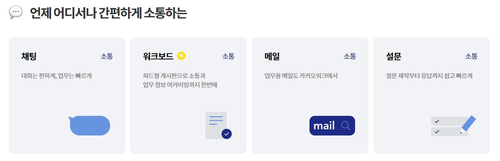
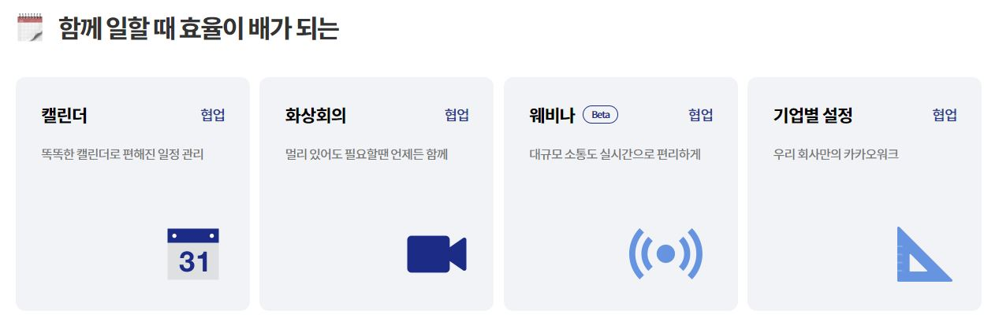
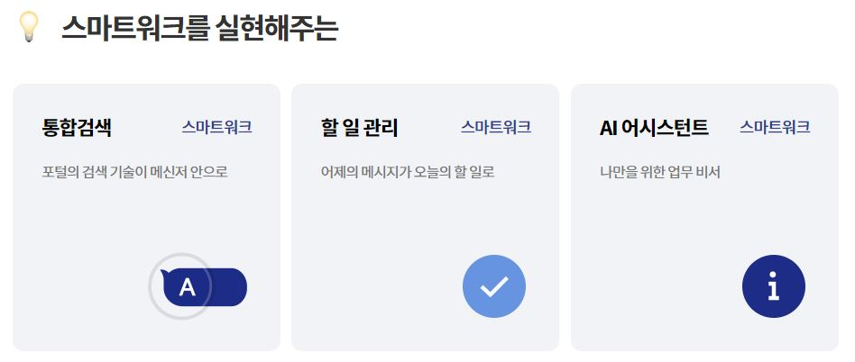
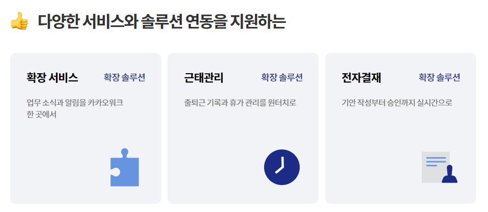
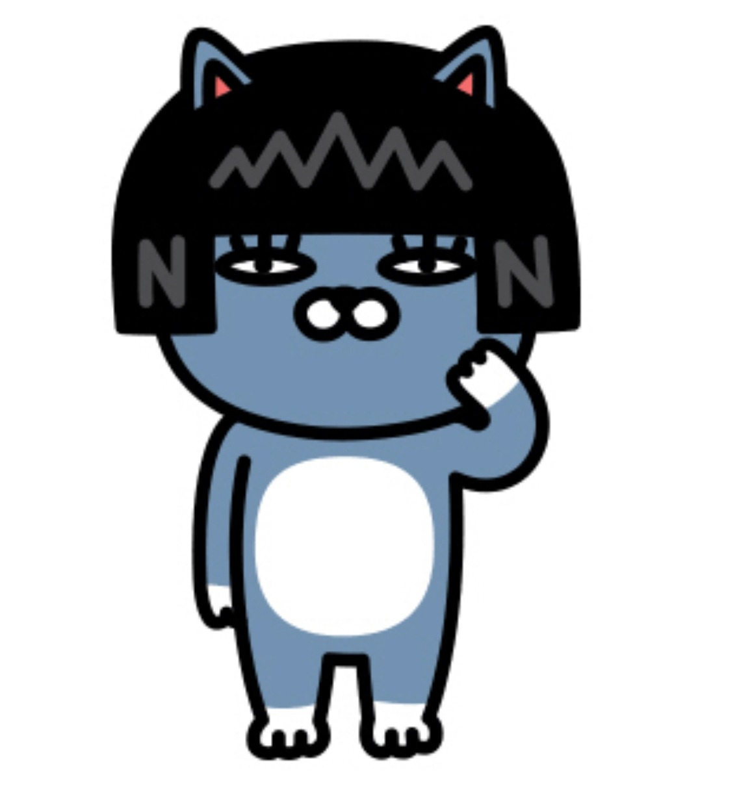
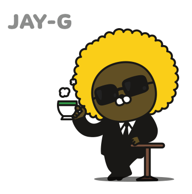
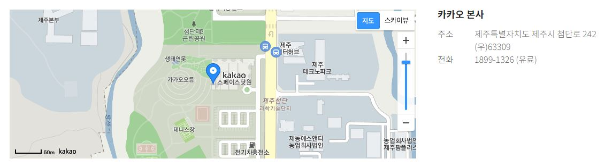
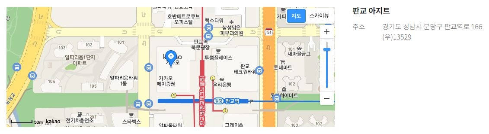
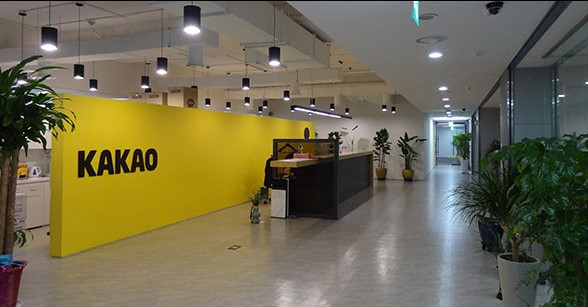
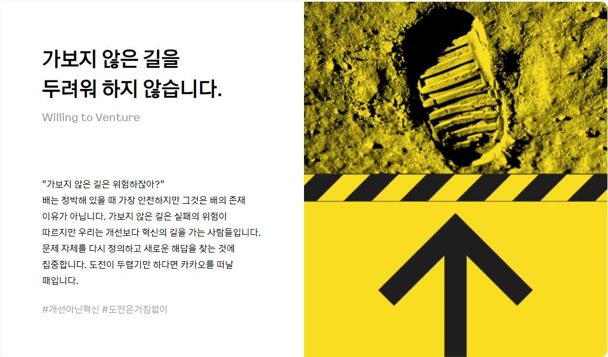

카카오 소개
카카오 역사
NHN의 전 대표였던 김범수가 2006년 11월 29일 아이위랩을 설립하며 첫 발을 내디뎠다. 2007년 Buru.com과 2008년 Wisia.com에서 실패를 거듭한 뒤 미국 법인을 정리했다. 직후 미국에서 아이폰 3gs가 큰 반향을 일으킨 것을 보고 모바일 기반 서비스를 만드는 것으로 방향성을 재설정 했다. 이후 카카오톡을 2010년 3월 18일 아이폰용 모바일 메신저로 앱스토어에 등록함으로써 처음으로 공개했다.
카카오톡의 역사
아이폰 이용자들의 가입 만으로는 부족했다. 브랜든은 갤럭시 S 출시에 맞춰 안드로이드 버전 개발을 시작했다. 2010년 8월, 카카오톡 안드로이드 버전이 배포되면서 이용자 수가 폭발적으로 증가했다. 카카오톡은 출시를 준비하면서 10만 명이 사용하는 서비스가 되는 것을 목표로 했다.
카카오의 주요기능
 
 
출처 : https://ko.wikipedia.org/wiki/%EC%B9%B4%EC%B9%B4%EC%98%A4_(%EA%B8%B0%EC%97%85), https://kakaoenterprise.com
카카오 프렌즈
카카오 프렌즈 소개
카카오에서 서비스하는 이모티콘 캐릭터이자 사실상 카카오의 마스코트.

네오 : 졸며 침 흘리기, 셀카 찍기, 도도하게 굴기(전신 샷), 손 모으고 자는 시늉하기, 거울 보며 빗질하기, 뽀글이 머리, 초사이어인 되기, 빡쳐서 주먹 들이대기, 아싸 하고 두 주먹 쥐기
프로도 : 쌩 하고 도망가기, 목발 짚고 식은땀 흘리기, 나이트캡 쓰고 잘 자라고 인사하기, 래퍼처럼 으스대기, 엎드려 눈누난나, 서서 눈누난나, 엎어져서 침 흘리기, 늦었다고 가방 들고 뛰어가기, 선물 들고 씩 웃기
튜브 : 잘못했어요, Sorry, 여유롭게 차 한잔, 온몸에서 식은땀, 머리에 혹 난 채로 엉엉, 침흘리고 기절, 다크서클 작렬, 대폭발, 축하, 감동의 쓰나미, 엎어져 눈물 콧물 빼기, 자빠지며 울기, 헉 충격, 기쁨의 승룡권, 열공

어피치 : 헤롱헤롱, !, 눈물의 자전거 질주, 푸학, 눈누난나, 어후 더워, 죽을래?, 심각
무지와 콘 : ILY sign, 야호, 무지야 밥 먹어라, 지각이야, 흥!, 무지한테 일어나라고 물 뿌리기

제이지 : 랩 하기, 욕조에서 와인을, 메일 왔다!, 자유낙하(?), 눈물의 짜장면(?), 혼술, 마감 임박!, 기쁨의 눈물, 요~, 커피 한 잔, 으악 내 눈, 개털이야
카카오 프렌즈 영향력
카카오의 부업 같지만 이제는 명실상부한 밥줄 중 하나. 인형 등 판매수익, 로열티 매출액만 100억을 넘는다. 아예 캐릭터 법인을 분사시켜서 관련 사업만으로도 카카오그룹 매출 중에서 8%를 차지한다. 분사 초창기에는 '카카오프렌즈 주식회사'였다가 카카오IX, 카카오커머스를 거쳐 카카오 본사에 흡수 합병되었다. 캐릭터 관련 사업은 계열사 카카오 본사에서 전개한다. 한국콘텐츠진흥원이 발표한 캐릭터 선호도 조사에서 2015년부터 꾸준히 2위에 랭킹되고 마침내 2017년에 1위를 차지한,# 한국에서 가장 사랑받는 캐릭터들이다. 모바일 기반 캐릭터가 선호도 1위를 차지한 건 이번 연도가 처음이라고 한다. 특히 경쟁사가 한국에서는 캐릭터로서의 영향력을 잃은 동시에 바이럴 마케팅 블로그 포스트의 열에 아홉은 브라운앤프렌즈 이모티콘을 첨부해 놓아 한국에서는 싫어하는 사람들이 더 많은지라 카카오프렌즈의 인기는 더욱 더 높아지고 있다.
사진 및 정보 출처 : https://www.kakaowork.com/about
카카오 위치 및 사진
카카오 위치
카카오 본사

카카오 판교아지트

카카오 고객센터
카카오 회사 내부


